컴포넌트 가이드
행동
행동 카테고리에서는 화면을 이동하거나 주요 기능을 실행하는
컴포넌트의 문구 작성 원칙을 안내합니다.
고객이 행동 요소를 누르기 전에 어떤 기능이 실행되고 어디로
이동하는지 바로 알 수 있게 씁니다.
버튼
- 명확한 단일 작업을 수행하기 위한 상호작용을 할 때 사용합니다.
- 버튼 문구는 고객이 누른 뒤 어떤 기능이 실행되는지 예측할 수 있게 씁니다.
탐색
- 고객이 현재 위치를 알고 원하는 화면으로 이동할 때 사용합니다.
- 탐색 문구는 이동할 대상과 이동 후 확인할 내용을 알 수 있도록 씁니다.
작성 규칙
확인 버튼 (Confirm Button)
안내, 완료, 오류 내용을 확인했을 때 누르는 버튼입니다. 다른 표현을 덧붙이거나 변형하지 않고 [확인]이라고 씁니다.
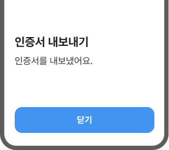
[닫기]는 화면 종료 동작이라서
내용을
확인했다는 의미와 맞지 않습니다.
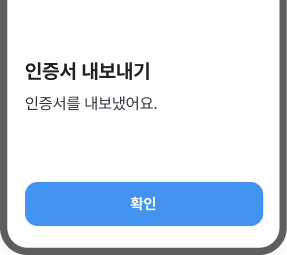
화면을 닫는 게 아니라
확인했다는 뜻이
드러나도록 [확인]으로 씁니다.
작성 규칙
-
안내, 완료, 오류 내용을 확인하는 기본
버튼은 [확인]으로 씁니다.
예) [닫기], [나가기], [완료] → [확인]
-
누르면 절차가 완전히 종료되는
화면에서의 확인 버튼은 ‘-하기’나 추가
설명을 붙이지 않습니다.
예) [확인하기], [확인 완료] → [확인]
-
버튼을 누른 뒤 기능이 실행되거나 다음
단계로 이동하는 경우에는 [확인] 대신
구체적인 행동을 씁니다.
예) [확인] → [인증서 내보내기], [확인] → [계좌 개설하기]
단일 액션 버튼 (Action Single Button)
고객이 실행할 행동을 안내하는 버튼입니다. 동작만으로 무엇을 하는지 알 수 있으면 동작만 쓰고, 대상 없이는 뜻이 모호해지면 대상을 함께 씁니다.
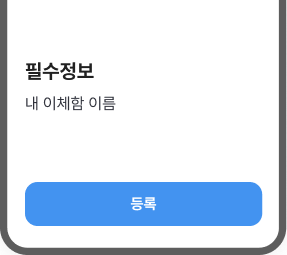
[등록]만 쓰면 무엇을 등록하는지
알기
어렵습니다.
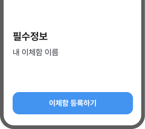
대상과 행동을 함께 써서
무엇이 실행되는지
분명하게 씁니다.
작성 규칙
-
액션 버튼은 기본적으로 고객이 실행할
행동을 [액션 + -하기]로 씁니다.
예) [등록하기], [신청하기], [변경하기]
-
한 버튼에는 하나의 액션만
씁니다.
예) [예약이체 조회/취소] → [예약이체 조회], [예약이체 취소]
-
액션만으로 의미가 부족하면 대상이나
목적을 함께 씁니다.
버튼은 빠르게 인지할 수 있도록 짧게 쓰되, 대상을 함께 쓸 때는 한 줄 안에서 읽히는 길이로 조정합니다.
예) [등록하기] → [비밀번호 등록하기], [변경하기] → [휴대폰번호 변경하기]
-
이벤트·마케팅 버튼은 필요한 경우 고객이
받게 될 혜택을 함께 씁니다.
혜택이 버튼을 누른 뒤 받을 결과와 직접 연결될 때 함께 씁니다.
예) [응모] → [응모하고 포인트 받기], [환전] → [환전하고 커피쿠폰 받기]
-
대화 흐름이 중요한 화면에서는 답변형
문구를 사용할 수 있습니다.
예) [동의하기] → [네, 동의할게요]
-
권할 필요성이 낮은 액션 버튼에는
‘-하기’를 붙이지 않고 행동명을 명확히
씁니다.
예) [회원탈퇴하기] → [회원탈퇴], [서비스 해지하기] → [서비스 해지]
-
널리 쓰여 굳어진 액션 버튼에는
‘-하기’를 쓰지 않습니다.
예) [확인하기] → [확인], [완료하기] → [완료], [홈으로 이동하기] → [홈으로]
이중 액션 버튼 (Action Dual Button)
고객이 두 가지 선택지 중 하나를 선택할 때 쓰는 버튼입니다. 오른쪽 버튼에는 진행하는 행동을, 왼쪽 버튼에는 그 행동의 대안을 씁니다.
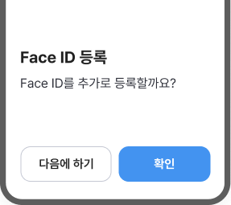
[확인]은 실행 행동이 드러나지 않고
권할
필요성이 낮은 버튼에는 ‘-하기’를 붙이지
않습니다.
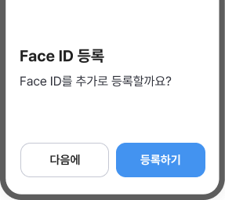
실행 버튼은 동작을 구체적으로 쓰고
보류
버튼은 '-하기' 없이 짧게 씁니다.
작성 규칙
-
두 개의 버튼을 함께 쓸 때는 오른쪽
버튼에는 고객이 진행할 주요 행동을
씁니다.
단, 기업 서비스처럼 버튼의 순서가 다르게 굳어진 경우에는 그 순서를 유지합니다.
예) [등록하기], [신청하기], [저장하기]
-
액션만으로 의미가 부족하면 대상이나
목적을 함께 씁니다.
버튼은 빠르게 인지할 수 있도록 짧게 쓰되, 대상을 함께 쓸 때는 한 줄 안에서 읽히는 길이로 조정합니다.
예) [등록하기] → [비밀번호 등록하기], [변경하기] → [휴대폰번호 변경하기]
-
왼쪽 버튼에는 오른쪽 버튼의 대안을
씁니다.
권할 필요성이 낮은 버튼에는 ‘-하기’를 붙이지 않습니다.
예) [다음에 하기]/[등록하기] → [다음에]/[등록하기], [취소하기]/[신청하기] → [취소]/[신청하기]
-
널리 쓰여 굳어진 액션 버튼에는
‘-하기’를 쓰지 않습니다.
예) [확인하기] → [확인], [완료하기] → [완료], [홈으로 이동하기] → [홈으로]
예/아니요 버튼 (Yes/No Button)
[아니요]/[예]로 표현하는 것이 더 직관적인 질문일 때와 취소 여부를 물을 때 쓰는 버튼입니다.
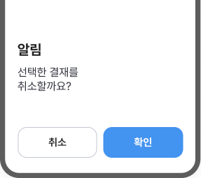
취소 의사를 묻는 화면에 [취소]를 쓰면
창을
닫는 건지 결재를 취소하는 건지 구분하기
어렵습니다.
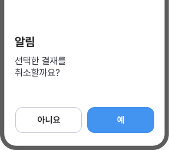
취소 여부를 묻는 질문에는 [아니요]와 [예]를
써서
고객이 선택의 의미를 바로 알 수 있도록
돕습니다.
작성 규칙
-
고객의 의사를 직접 확인하는 직관적인
질문에는 [아니요]/[예] 버튼을
씁니다.
단, 실행 행동을 강조해야 하는 경우에는 구체적인 액션 버튼을 씁니다.
예) 취소, 중단, 이전 등 고객 의사를 확인하는 상황에 씁니다.
-
긍정 버튼은 [예], 부정 버튼은
[아니요]로 씁니다.
예) [네] → [예], [아니오] → [아니요]
적용 유무 버튼 (Opt-in/out Button)
고객이 알림 수신, 정보 제공, 항목 포함처럼 특정 기능이나 항목을 적용할지 정할 때 쓰는 버튼입니다. 긍정과 부정 중 한쪽을 더 권하는 것처럼 보이지 않게 씁니다.
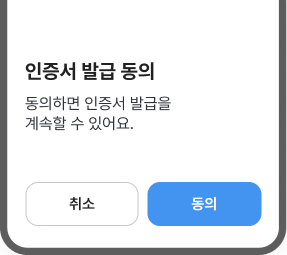
[취소]는 화면을 닫는 행동처럼 읽혀서
동의
여부를 선택하는 문구로 보이지 않습니다.
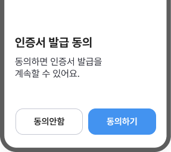
[동의안함]과 [동의하기]처럼 부정과 긍정을
대등하게 써서
고객이 선택 기준을 바로
구분할 수 있게 씁니다.
작성 규칙
-
적용 여부나 선택 상태를 정하는 버튼은
[액션안함]/[액션] 형태로 씁니다.
단, 직관적인 질문에는 [아니요]/[예], 선택을 미루거나 보류하는 경우에는 [다음에], [동의하기]
예) [동의안함]/[동의하기], [신청안함]/[신청하기], [수신안함]/[수신]
-
긍정 버튼과 부정 버튼은 한쪽을 더
권하는 것처럼 보이지 않게
씁니다.
예) [신청하지 않음]/[신청] → [신청안함]/[신청]
-
‘기’, ‘미’, ‘비’, ‘불’ 같은 한자어를
쓰지 않고 쉬운 표현으로 씁니다.
예) [미동의] → [동의안함], [미신청] → [신청안함], [비수신] → [수신안함]
탭 (Tabs)
동일 계층의 콘텐츠를 그룹화하여 화면 이동 없이 빠르게 탐색할 수 있습니다. 탭 이름은 각 영역에 담긴 내용을 예측할 수 있게 간결한 명사로 씁니다.
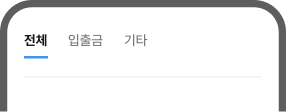
[기타]처럼 범위가 넓은 이름은
탭 안에
어떤 정보가 있는지 예측하기 어렵습니다.
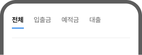
탭은 담긴 내용을 바로 알 수 있는 명사로
쓰고
같은 화면 안에서는 같은 기준으로
나눕니다.
작성 규칙
-
탭 이름만 보고도 어떤 내용인지 예측할
수 있는 명사형으로 씁니다.
예) [입출금], [예적금], [대출]
-
[기타]처럼 범위가 모호한 이름은 쓰지
않습니다.
예) [기타] → [대출], [외환], [보험] 등 실제 항목명으로 작성합니다.
-
같은 화면의 탭은 같은 분류 기준으로
맞춰 씁니다.
예) [입출금], [상품] → [입출금], [예적금], [대출]
하단 내비게이션 (Bottom Navigation)
주요 메뉴로 빠르게 전환할 수 있는 탐색바로 최상위 메뉴로 구성됩니다. 메뉴명은 고객이 이동할 화면을 예측할 수 있도록 익숙한 말로 씁니다.
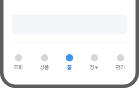
[정보], [관리]처럼 범위가 넓은 이름은
이동할
화면을 명확히 예측하기 어렵습니다.
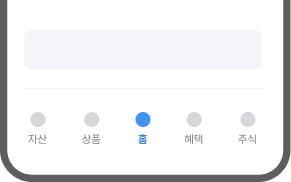
메뉴명만 보고도 어떤 화면으로 이동하는지
알
수 있게 씁니다.
작성 규칙
-
메뉴 이름은 어느 화면에서나 일관되게
씁니다.
예) [자산], [내 자산], [나의 자산] → [자산]
-
메뉴명은 짧고 익숙한 명사형으로
씁니다.
예) [자산], [혜택], [상품]
-
범위가 넓은 이름은 쓰지
않습니다.
예) [관리], [기타], [서비스] 등 범위가 넓은 이름
-
메뉴명은 해당 영역의 최상위 이름으로
씁니다. 영역 안의 세부 항목명으로 쓰지
않습니다.
예) [혜택 > 이벤트] → [혜택], [자산 > 조회] → [자산]
브레드크럼 (Breadcrumbs)
현재 위치를 안내하는 탐색 보조 도구로 상위
계층으로 이동할 수 있는 경로를 제공합니다.
메뉴명을
기준으로 쓰고 경로 안의 문구는 명사형으로 일관되게
씁니다.
‘퇴직연금(IRP)’처럼 경로를 한 덩어리로
묶으면
고객이 어떤 경로로 지금 화면에
왔는지 알기 어렵습니다.
경로를 단계별로 나누어 고객이 어떤 경로를
거쳐서
지금 화면에 왔는지 알 수 있게
씁니다.
작성 규칙
-
경로 안의 문구는 전체메뉴에 있는 메뉴명
그대로, 명사형으로 씁니다.
예) 메뉴명 [예적금] → 브레드크럼 [예적금], 메뉴명 [대출관리] → 브레드크럼 [대출관리]
-
경로가 길어지면 고객이 위치를 파악하는
데 필요한 핵심 단계만 남깁니다.
예) [홈 > 금융상품 > 예금 > 예적금 > 정기예금 > 상세] → [홈 > 예적금 > 정기예금]
작성 전 확인 포인트
누르기 전에 어떤 기능이 실행되는지, 어디로 이동하는지 고객이 바로 알 수 있게 썼나요?
- 버튼명만 보고 실행할 행동과 대상을 알 수 있게 썼나요?
- [확인]은 단순 확인에만 쓰고, 실행이 필요한 경우 구체적인 행동으로 썼나요?
- [아니요]/[예]는 예/아니요로 답하는 것이 더 직관적이거나, 취소 여부를 묻는 상황에 썼나요?
- 탭과 내비게이션은 이동할 화면이 명확히 드러나도록 썼나요?
입력
입력 카테고리에서는 고객이 직접 입력하거나 옵션을 선택해
값을 지정하는 컴포넌트의 문구 작성 원칙을 안내합니다.
입력값의 형식과 기준을 명확히 안내하고, 고객이 잘못 입력
했을 때는 원인과 올바른 입력 기준을 함께 씁니다.
텍스트 필드
- 데이터를 입력하고 수정할 경우 사용합니다.
- 입력 형식과 조건이 분명하게 보이도록 씁니다.
선택 요소
- 고객이 여러 항목 중 하나 또는 여러 개를 고를 때 사용합니다.
- 레이블은 선택 기준과 선택 후의 결과가 분명하게 보이도록 씁니다.
작성 규칙
플레이스홀더 (Placeholder)
입력 전 필요한 값이나 조건을 짧게 안내하는 문구입니다. 고객이 실제로 입력해야 할 값이나 입력 조건만 간결하게 씁니다.
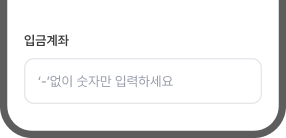
입력 조건을 서술형으로 길게 써서
한눈에
확인하기 어렵습니다.
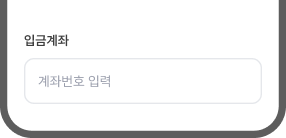
실제로 입력해야 하는 값을 짧게 써서
입력
대상을 바로 알 수 있도록 돕습니다.
작성 규칙
-
레이블에는 입력 대상을,
플레이스홀더에는 입력할 값이나 조건을
씁니다.
주요 내용을 재안내할 필요가 있는 경우를 제외하면, 레이블과 같은 말을 반복하지 않습니다.
예) 레이블: [주민등록번호], 플레이스홀더: [앞 6자리 - 뒤 1자리]
-
입력 조건은 문장이 아닌 명사형으로
씁니다.
예) [‘-’ 없이 숫자만 입력하세요] → [‘-’ 없이 입력], [금액을 입력하세요] → [금액 입력]
-
입력해야 할 자릿수가 명확한 경우에는
[숫자 N자리 입력]으로 씁니다.
예) [OTP 일련번호 숫자 4자리 입력], [인증번호 숫자 6자리 입력], [생년월일 6자리]
-
입력 조건이 길거나 보안·제한 조건
설명이 필요하면 헬퍼텍스트로
씁니다.
예) 플레이스홀더: [비밀번호 입력], 헬퍼텍스트: [영문, 숫자, 특수문자를 모두 조합해 8~12자리로 설정해 주세요.]
-
검색창의 플레이스홀더는 [검색할 대상 +
검색]으로 씁니다.
예) [은행/증권사 검색], [상품명 검색], [직원 이름 또는 직원번호 검색]
-
금액 범위가 정해져 있으면 최솟값과
최대값을 함께 씁니다.
안내나 표시 영역에서는 금액은 규모를 빠르게 파악할 수 있도록 만원, 억원 등 한글 단위로 줄여 쓸 수 있습니다.
예) [1만원~3,000만원], [10만원~1억원]
정보 헬퍼텍스트 (Informational Helper Text)
입력 전에 필요한 형식, 기준, 제한 조건을 미리 알려주는 보조 문구입니다. 고객이 입력 전에 확인해야 할 내용을 입력 칸 아래에 간결하게 씁니다.
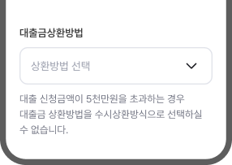
제한 조건을 긴 문장으로 풀어 쓰면
고객이
어떤 항목을 선택해야 하는지 바로 알기
어렵습니다.
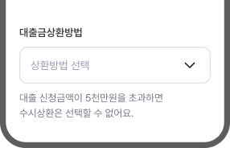
제한되는 조건과 대상을 간결하게 써서
입력
전에 필요한 기준을 바로 알 수 있도록 돕습니다.
작성 규칙
-
입력 기준은 정확한 값으로
씁니다.
금액, 범위, 자릿수, 조합처럼 판단 기준이 되는 정보는 명확한 수치로 안내합니다.
예) [영문, 숫자 조합 8자 이내로 입력해 주세요.]
-
금액 범위가 정해져 있으면 최솟값과
최대값을 함께 씁니다.
안내나 표시 영역에서는 금액은 규모를 빠르게 파악할 수 있도록 만원, 억원 등 한글 단위로 줄여 쓸 수 있습니다.
예) [1만원~5,000만원 사이로 입력해 주세요.]
-
조건 고지와 입력 요청은 어미를 구분해
씁니다.
법령/약관에 근거한 조건 고지는 '-합니다'로, 입력을 요청하는 문장은 '-해 주세요'로 씁니다.
예) 고지: 만 19세 미만은 가입할 수 없습니다. 요청: 본인 명의 계좌만 입력해 주세요.
-
레이블 또는 플레이스홀더의 정보와 같은
내용을 반복해 쓰지 않고, 입력에 필요한
추가 정보만 씁니다.
예) 레이블: [비밀번호], 플레이스홀더: [비밀번호를 입력], 헬퍼텍스트: 영문과 숫자를 포함해 8자 이상으로 입력해 주세요.
오류 헬퍼텍스트 (Error Helper Text)
고객이 잘못 입력했을 때, 무엇이 잘못됐고 어떻게 고쳐야 하는지를 알려주는 문구입니다. 수정 기준을 먼저 쓰고, 필요한 정보는 보조로 씁니다.
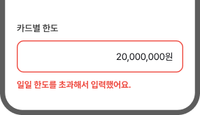
오류의 원인만 안내하여 고객이 입력값을
어떻게
수정해야 하는지 알기 어렵습니다.
수정 기준을 먼저 안내하여
고객이 바로
입력값을 수정할 수 있도록 돕습니다.
작성 규칙
-
문제와 함께 수정 기준을 함께
씁니다.
예) [한도를 초과하였어요.] → [1,000만원 이하로 입력해 주세요.]
-
오류 원인은 고객 잘못으로 느껴지지
않도록 씁니다.
예) [잘못 입력하셨습니다.] → [공백 없이 입력해 주세요.]
-
헬퍼텍스트는 서술형으로 쓰고, 문장
끝에는 마침표를 씁니다.
행동 요청은 ‘-해 주세요’로 간결하게 씁니다.
예) [입력하시기 바랍니다.] → [입력해 주세요.]
-
부정형보다 긍정형 문장으로 입력 방법을
씁니다.
예) [공백은 입력할 수 없습니다.] → [공백 없이 입력해 주세요.]
체크박스 (Checkbox)
사용자가 하나 이상을 선택할 수 있는 옵션을 제공할 때 사용합니다. 레이블은 같은 분류 기준과 표현 형태로 써서 항목끼리 비교할 수 있도록 씁니다.
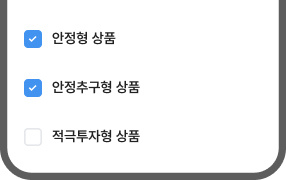
각 항목별 공통 단어가 반복되어
레이블을
한눈에 파악하기 어렵습니다.
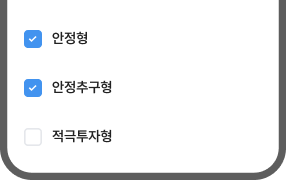
공통 명사는 제외하고 각 항목의 특성만
작성하여
선택을 돕습니다.
작성 규칙
-
함께 제시하는 항목은 같은 분류 기준에
맞춰 쓰되, 명확한 구분을 위해 반복되는
문구는 가능한 제외합니다.
예) [입출금 알림], [카드 승인 알림], [상품 혜택 알림] → [입출금], [카드 승인], [상품 혜택]
-
항목만으로 선택 범위를 알기 어렵다면
보조 문구를 추가합니다.
예) 레이블: [안정형 상품], 보조 문구: 예적금, 국채, 지방채, 보증채, MMF, CMA 등
-
체크했을 때 실제로 적용되는 내용을
레이블에 직접 씁니다. 내용이 길면 보조
문구로 보충합니다.
예) [마케팅 동의] → [혜택·이벤트 알림 받기]
-
하위 항목을 모두 선택하는 [모두 동의],
[전체 선택]과 같은 항목은 범위를 함께
씁니다.
예) [필수 약관 모두 동의], [조회 계좌 전체 선택]
라디오 버튼 (Radio Button)
2개 이상의 항목에서 1개만 선택할 수 있는 경우에 사용합니다. 레이블은 같은 분류 기준과 표현 형태로 써서 항목끼리 비교할 수 있도록 씁니다.
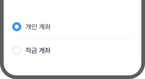
[개인 계좌]는 계좌를 쓰는 사람이 기준이고
[적금
계좌]는 상품 종류가 기준이라서 서로 비교하기
어렵습니다.
[개인 계좌]와 [법인 계좌]처럼
같은 분류
기준의 선택지로 씁니다.
작성 규칙
-
라디오 버튼은 하나만 선택하는
항목이므로 레이블을 서로 비교되도록
씁니다.
예) [개인]/[기업], [지금 이체]/[예약 이체]
-
선택 기준이 모호한 레이블은 쓰지
않습니다.
예) [일반]/[전문] → [일반금융소비자]/[전문금융소비자]
-
고객 판단에 영향을 주는 레이블을 정확한
용어로 씁니다.
예) [원금균등 상환]/[원리금균등 상환]/[만기일시 상환]
-
레이블이 금융 용어라 선택지 간 차이를
바로 이해하기 어려울 때는 보조 문구를
함께 씁니다.
예) 레이블: [원금균등 상환], 보조 문구: 초기 상환액이 크지만, 시간이 지날수록 이자의 부담이 줄어요.
-
항목이 많아지면 각 항목이 서로
구분되도록 짧고 일관되게 씁니다.
예) [문자 수신], [앱 푸시], [이메일로 받기] → [문자], [앱 푸시], [이메일]
토글 스위치 (Toggle Switch)
항목의 상태를 두 가지 옵션으로 설정 및 제어할 수 있습니다. 토글 문구는 기능을 설정하면 적용되는 결과가 바로 보이게 씁니다.
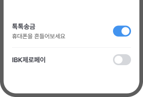
레이블에 [톡톡송금]만 쓰고 보조 문구에
[흔들어보세요]처럼
행동만 쓰면, 무엇을
적용하는 설정인지 알기 어렵습니다.
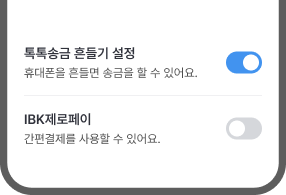
레이블에는 무엇을 적용하는 설정인지 쓰고
보조
문구에는 적용 시 나타나는 결과를 씁니다.
작성 규칙
-
레이블은 서술형으로 쓰지 않고 짧은
문구로 씁니다.
예) [금액을 노출하지 않도록 숨김을 활성화합니다.] → [금액 숨김]
-
레이블에는 이름만 쓰지 않고, 무엇에
대한 설정인지 드러나게 씁니다.
예) [알림] → [주요 금융거래 알림], [혜택] → [유용한 혜택 알림]
-
같은 묶음 안의 토글 레이블은 항목마다
문구의 형식을 맞춰서 씁니다.
예) [입출금 알림 설정], [기업카드 승인 알림 설정]
-
사용 환경을 바꾸는 항목은 [대상 + 설정]
구조로 씁니다.
화면 표시나 사용 방식처럼 환경을 바꾸는 항목은 설정 대상이 보이게 씁니다.
예) [다크모드] → [다크모드 설정], [쉬운뱅킹] → [쉬운뱅킹 설정]
-
보조 문구에는 토글을 켰을 때 적용되는
결과나 목적을 씁니다.
예) 휴대폰을 흔들어보세요. → 휴대폰을 흔들면 송금을 할 수 있어요.
드롭다운 (Dropdown)
옵션 리스트 중 1개의 옵션을 선택하는 경우 사용합니다. 레이블은 어떤 대상을 선택할 수 있는지 분명히 드러나게 씁니다.
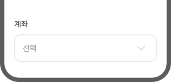
‘계좌’만으로는 어떤 목적의 계좌를
선택해야
하는지 알기 어렵습니다.
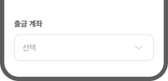
레이블에 대상을 함께 써서
고객이 어떤
계좌를 선택해야 하는지 바로 알 수 있게 씁니다.
작성 규칙
-
레이블에는 선택해야 하는 대상을
구체적으로 씁니다.
예) [은행] → [입금 은행], [용도] → [자금용도]
-
레이블은 짧고 명확한 명사형으로
씁니다.
단, 짧게 줄였을 때 어떤 항목을 골라야 하는지 알기 어려워지면 맥락을 함께 씁니다.
예) [생계유지를 위해 하고 계신 일] → [직업], [돈을 어디에 쓰실 예정인가요?] → [자금용도]
-
선택 전의 플레이스홀더는 [선택]으로
씁니다.
단, 레이블만으로 선택 대상이 불분명하면 대상을 함께 씁니다.
예) 기본: [선택], 대상이 불분명한 경우: [입금 은행 선택], [출금 계좌 선택]
슬라이더 (Slider)
지정된 범위에서 핸들을 수평 또는 수직으로 이동하여
원하는 값을 선택하거나 조정하는 경우
사용합니다.
고객이 조절하는 값, 선택 가능한
범위를 함께 알 수 있게 씁니다.
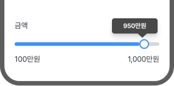
‘금액’처럼 범위가 넓은 레이블을 쓰면
고객이
어떤 금액을 조절하는지 알기 어렵습니다.
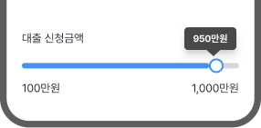
조절 대상을 ‘대출 신청금액’처럼 구체적으로
써서
고객이 무엇을 조절하는지 바로 알 수
있게 씁니다.
작성 규칙
-
레이블은 고객이 무엇을 조절하는지 알 수
있게 씁니다.
슬라이더 값만으로는 조절 대상이 보이지 않으므로, 레이블에서 대상이 드러나야 합니다.
예) [대출 기간], [월 납입금], [이체한도]
-
선택한 설정값에는 단위를 함께
씁니다.
숫자만 있으면 금액, 기간, 비율 중 어떤 값인지 알기 어렵습니다.
예) [12개월], [50만원], [30%]
-
금액의 범위가 정해져 있으면 최솟값과
최대값을 함께 씁니다.
안내나 표시 영역에서는 금액은 규모를 빠르게 파악할 수 있도록 만원, 억원 등 한글 단위로 줄여 쓸 수 있습니다.
예) [100만원~1,000만원]
작성 전 확인 포인트
고객이 입력하거나 선택해야 할 값과 기준을 알고 실수 없이 완료할 수 있게 썼나요?
- 고객이 실제로 입력해야 할 값과 입력 조건만 간결하게 썼나요?
- 자릿수, 형식, 범위, 단위처럼 입력 기준을 구체적으로 썼나요?
- 입력 전 알아야 하는 내용(제한 조건, 설명, 안내 등)을 헬퍼텍스트에 미리 썼나요?
- 입력 오류가 발생했을 때 발생 이유와 해결 방법을 함께 썼나요?
- 레이블을 같은 기준으로 분류하여 서로 비교될 수 있게 썼나요?
정보 표시
정보 표시 카테고리에서는 고객이 화면의 정보, 상태, 진행
상황을 확인하도록 돕는 컴포넌트의 문구 작성 원칙을
안내합니다.
정보의 이름과 값을 명확히 연결하고, 같은 성격의 정보는 같은
기준으로 씁니다.
레이블
- 화면 안의 항목, 목록, 진행 단계에 이름을 붙입니다.
- 같은 성격의 항목을 같은 분류 기준과 표현 형태를 맞춰서 씁니다.
디스크립션
- 주요 정보 외에 고객이 알아야 할 내용을 한두 문장으로 보완합니다.
- 지금 왜 이 정보가 필요한지를 ‘-해요체’로 짧게 씁니다.
도움말
- 낯선 용어, 제한 조건, 다음 상황을 이해하도록 돕습니다.
- 꼭 필요한 내용만 쉽고 간결하게 씁니다.
태그
- 상태나 조건을 한눈에 보이게 표시합니다.
- 문장을 넣지 않고 한두 단어로 짧게 씁니다.
작성 규칙
리스트 (List)
입력 전 필요한 값이나 조건을 짧게 안내하는 문구입니다. 고객이 실제로 입력해야 할 값이나 입력 조건만 간결하게 씁니다.
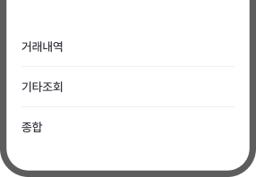
[기타조회], [종합]처럼 대상이나 행동이 빠진
레이블은
무엇을 확인할 수 있는지 알기 어렵습니다.
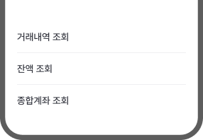
대상과 행동을 함께 써서
확인할 수 있는
내용이 드러나게 씁니다.
작성 규칙
-
리스트 항목 이름은 [대상 + 행동]으로,
무엇을 하는지 드러나게 씁니다.
예) [거래내역] → [거래내역 조회], [예금] → [예금 해지]
단, 한 단어로 뜻이 통하는 메뉴는 그대로 둡니다.
예) [환전], [내 카드], [이체]
-
낯선 내부 용어와 영문 약어는 풀어
쓰거나 보조 설명을 덧붙여
씁니다.
예) [어카운트인포] → [계좌통합관리(어카운트인포)], [IRP] → [IRP(개인형 퇴직연금)]
-
통상적으로 한 단어로 붙여 쓰는 경우가
아니라면 메뉴 이름은 의미 단위로 띄어
씁니다.
단, 화면에서 반복하여 쓰는 짧은 기능명이나 항목명은 하나의 이름처럼 읽히도록 붙여 쓸 수 있습니다.
예) [자동이체이력조회] → [자동이체 이력 조회]
-
서로 대비 되는 두 개 이상의 대상을 함께
묶어야 할 때는 슬래시(/)로
구분합니다.
예) [이체/출금], [자동납부 신청/취소]
진행 단계 (Progress Step)
프로세스 진행 단계를 시각적으로 표시할 때 사용합니다. 단계명은 각 단계에서 하는 일을 짧고 명확하게 씁니다.
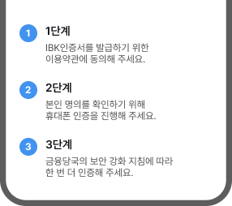
단계명을 번호로만 쓰면
지금 무엇을 하는
단계인지 알기 어렵습니다.
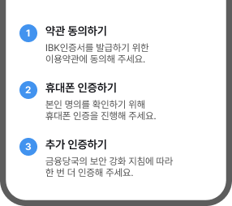
각 단계에서 할 일을 명사형으로 써서
진행해야
하는 일을 바로 알 수 있도록 씁니다.
작성 규칙
-
단계 이름은 각 단계에서 할 일을
명사형으로 일관되게 씁니다.
예) [1단계] → [약관 동의하기], [2단계] → [본인 인증하기], [3단계] → [가입 완료]
-
단계명에는 해당 단계의 핵심 행동만
씁니다.
예) [정보 입력 후 본인 인증] → [정보 입력]
-
완료 단계는 [대상 + 완료]로
씁니다.
예) [3. 완료] → [3. 가입 완료], [3. 신청 완료], [3. 발급 완료]
단, 접수나 심사처럼 전체 과정중 일부 과정만 마무리 된 상태면 [완료]로 쓰지 않고 현재 상태를 씁니다.
예) [신청 접수 완료], [심사 대기]
인포 박스 (Info Box)
현재 상황에 대한 부가적인 정보를 고정적인 영역에
제공하는 경우 사용합니다.
행동에 필요한 이유,
조건, 유의사항을 보완하여 고객이 다음 행동을
판단할 수 있도록 돕습니다.
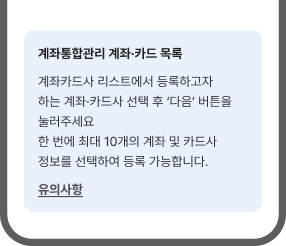
절차와 제한 조건만 나열하여
왜 이 정보를
확인해야 하는지 알기 어렵습니다.
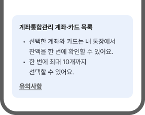
고객이 이 행동을 왜 해야 하는지와
선택 후
얻는 결과를 먼저 씁니다.
작성 규칙
-
고객이 이 정보를 왜 봐야 하는지 /
확인해야하는지를 먼저 씁니다.
예) [관련 정책에 따라 필요한 절차입니다] → [안전한 이용을 위해 본인 인증이 필요해요]
-
조건이나 유의사항은 고객이 이해할 수
있는 표현을 사용합니다.
예) [여신만료일을 확인해 주세요] → [대출만기일을 확인해 주세요]
-
선택이나 행동 후 달라지는 결과를 함께
씁니다.
예) [선택한 계좌와 카드는 내 통장에서 잔액을 한 번에 확인할 수 있어요.]
-
한 불릿에는 한 문장만 담고 전달할
내용이 두 개 이상이면 불릿을 나누어
씁니다.
예)
• 선택한 계좌와 카드는 잔액을 한 번에 확인할 수 있어요.
• 한 번에 최대 10개까지 선택할 수 있어요.
배너 (Banner)
공지 또는 마케팅 등 중요한 정보를 알리기 위해
가시성 높은 디자인으로 제공합니다.
화면의
주요 영역에서 안내, 혜택, 이벤트를 간결하게 알리고
다음 행동을 유도하도록 씁니다.
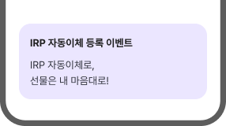
무엇을 해야 하는지, 어떤 혜택을 받는지
드러나지 않아
행동으로 이어지기
어렵습니다.
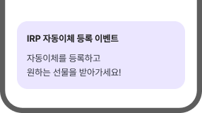
혜택과 참여 조건을 함께 써서
고객의 참여를 유도할 수 있도록 씁니다.
작성 규칙
-
고객이 얻는 혜택을 구체적으로
씁니다.
예) [이벤트 진행 중] → [이번 달 이체 수수료 무료]
-
기간이나 조건이 있으면 함께
씁니다.
단, 조건이 길면 배너에는 핵심 조건만 쓰고 상세 내용은 이동 후 화면에서 안내합니다.
예) [이번 달], [신규 가입 시], [자동이체 등록 고객]
-
배너를 눌렀을 때 넘어가는 화면이나
행동을 예측할 수 있게 씁니다.
예) [인증서 추천부터 발급까지 한 번에], [내 금융업무에 맞는 인증서를 찾아드려요]
툴팁 (Tooltip)
특정 요소에 대한 부수적인 정보가 필요할 때 제공하는 플로팅 요소입니다. 고객이 용어나 조건을 이해하는 데 필요한 정보만 짧게 씁니다.
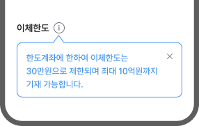
두 조건을 한 문장에 담아서
고객이 내용을
바로 파악하기 어렵습니다.
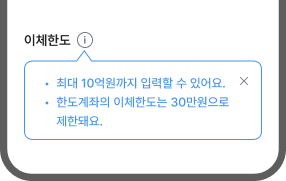
조건마다 한 줄씩 나눠 써서
고객이 각
조건을 명확히 확인할 수 있게 씁니다.
작성 규칙
-
용어의 정의나 상세 정보는 툴팁으로
씁니다.
주로 화면 안에서 바로 이해해야 하는 용어, 기준, 제한 조건을 설명할 때 사용합니다.
-
핵심 정보는 첫 문장에 씁니다.
예) [최대 10억원까지 입력할 수 있어요.]
-
설명이 두 문장 이상이거나 조건이 여러
개면 불릿으로 나눠 씁니다.
예)
· 8시간 이내: 50%
· 8시간 초과: 초과분 100% -
툴팁에 제목이 있는 경우에는 내용을 한
줄로 요약합니다.
예)
중도해지 이율
· 만기 전 해지하면 약정 금리 대신 낮은 이율이 적용돼요.
·가입 기간이 짧을수록 적용 이율이 낮아져요. - 관련 없는 부가 정보는 넣지 않습니다.
팝오버 (Popover)
액션 없이 특정 요소에 대한 부수적인 정보가 제공되는 플로팅 요소입니다. 팝오버 문구는 가리키는 대상과 이어질 행동 또는 결과가 일치하도록 씁니다.
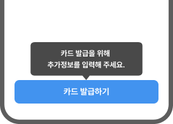
팝오버 내용과 버튼명이 가리키는 행동이
달라서
고객이 지금 할 일을 파악하기
어렵습니다.
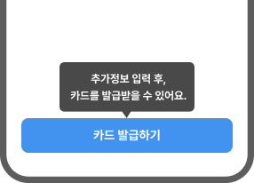
팝오버는 행동에 대한 결과를 알리고
버튼명은
지금 할 행동을 분명히 씁니다.
작성 규칙
-
팝오버가 붙은 대상과 직접 관련된 내용만
씁니다.
예) 버튼: [자동이체 등록하기], 팝오버: [등록하면 매월 같은 날에 자동으로 이체돼요]
-
고객이 얻는 이점이나 다음에 이어질
상황을 씁니다.
주로 고객이 행동을 왜 해야 하는지 보완할 때 사용합니다.
예) [추가정보 입력 후, 카드를 발급받을 수 있어요]
-
본문은 ‘-해요’체로 짧게 씁니다.
예) [최종 완료까지 1단계 남았어요]
-
팝오버에는 하나의 메시지만
전달합니다.
예) [여러 건을 한 번에 이체할 수 있어요]
-
버튼명이나 화면명을 그대로 반복하지
않습니다.
예) 버튼: [카드 발급정보 입력], 팝오버: [카드 발급정보를 입력해 주세요] → 팝오버: [입력하면 카드 발급을 계속할 수 있어요]
라벨 (Label, Badge)
정보를 효율적으로 찾을 수 있도록 속성 또는 카테고리를 분류할 때 사용합니다. 고객이 상품이나 정보의 성격을 바로 알아볼 수 있도록 짧은 명사형으로 씁니다.
‘-하기’처럼 행동을 유도하는 표현은
라벨을
버튼처럼 보이게 해서 정보 표시 역할과 맞지
않습니다.
라벨은 대상의 성격만 남겨서
어떤 정보인지
바로 구분하도록 돕습니다.
작성 규칙
-
라벨은 속성이나 상태를 짧은 명사형으로
씁니다.
예) [지금 신청하면 받을 수 있는 혜택] → [우대]
-
행동을 유도하는 말은 제외하고
씁니다.
예) [금리우대 찾기] → [금리우대], [현금쿠폰 받기] → [현금쿠폰]
-
분류 기준이 바로 드러나는 단어로
씁니다.
예) [기타] → [입출금], [일반] → [개인]
-
같은 기준으로 묶은 라벨은 같은 표현으로
맞춰 씁니다.
주로 위험도, 혜택, 상태처럼 비교되는 정보는 같은 표현 체계를 유지합니다.
예) [매우 높은 위험], [고위험] 혼용 → [매우 높은 위험]으로 통일
-
자세한 조건이나 이유는 라벨에 넣지 않고
본문, 툴팁, 상세 화면에서
설명합니다.
예) [오픈뱅킹에 등록할 수 없는 계좌] → [등록 제한]
칩 (Chip)
정보를 입력 및 선택하고 콘텐츠를 필터링하는 기능을 제공합니다. 고객이 원하는 조건을 빠르게 비교하고 선택할 수 있도록 짧게 씁니다.
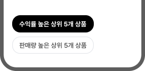
수식어구를 길게 풀어 쓰면
칩 안에서 선택
기준이 한눈에 들어오지 않습니다.
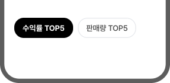
칩은 짧은 단어로 정리해서
빠르게 비교하고
선택하도록 돕습니다.
작성 규칙
-
칩은 선택 기준을 짧은 단어로
씁니다.
예) [전체 상품 모두 보기] → [전체]
-
수식어구를 길게 풀어 쓰지
않습니다.
예) [수익률 높은 상위 5개 상품] → [수익률 TOP5]
-
행동을 유도하는 말은 쓰지
않습니다.
예) [수익률 TOP5 보기] → [수익률 TOP5]
-
분류 기준이 드러나지 않는 단어는
단독으로 쓰지 않습니다.
예) [기타] → [외환/보험]
-
서로 대비 되는 두 개 이상의 대상을 함께
묶어야 할 때는 슬래시(/)로
구분합니다.
단, 두 대상이 같은 위계일 때만 슬래시(/)로 묶고, 성격이 다르면 항목을 나눕니다.
예) [인증/보안], [외환/보험], [이체/출금]
작성 전 확인 포인트
고객이 화면에 표시된 정보의 의미와 상태를 이해하고, 필요한 내용을 바로 확인할 수 있게 썼나요?
- 레이블은 고객이 확인할 대상과 정보의 성격을 알 수 있게 썼나요?
- 같은 성격의 정보는 같은 기준, 어순, 표기로 맞춰 썼나요?
- 진행 단계는 고객이 각 단계에서 해야 할 일을 중심으로 썼나요?
- 인포 박스와 배너는 고객이 이 정보를 봐야 하는 이유가 먼저 보이게 썼나요?
- 툴팁과 팝오버는 낯선 용어, 조건, 다음 상황을 이해하는 데 필요한 내용만 썼나요?
- 라벨과 칩은 상태나 조건이 한눈에 보이도록 짧은 명사형으로 썼나요?
피드백
피드백 카테고리에서는 고객의 행동 결과나 처리 상태를
알려주는 컴포넌트의 문구 작성 원칙을 안내합니다.
현재 상황과 이어서 할 일을 핵심만 짧게 씁니다.
토스트
- 행동에 대한 간략한 피드백을 일시적으로 제공할 때 사용합니다.
- 하나의 문구에는 하나의 상태나 결과만 안내해 바로 이해할 수 있게 씁니다.
팝업
- 별도의 창을 띄워 정보를 전달할 때 사용합니다.
- 상황과 이유를 먼저 알리고, 필요한 행동은 버튼으로 분명하게 씁니다.
바텀시트
- 화면 하단에 위치하여 보조 컨텐츠를 나타냅니다.
- 추가 정보를 제공하거나 부가적인 작업을 수행하기 위해 사용합니다.
데이터 없음
- 표시할 데이터나 콘텐츠가 없을 때 나타나는 영역입니다.
- 왜 비어 있는지 알려주고, 필요한 경우 다음 행동을 함께 씁니다.
작성 규칙
행동 결과 토스트 (Action Result Toast)
고객이 직접 선택하거나 실행한 행동이 완료되었음을 알려주는 토스트입니다. 고객이 실행한 대상과 결과가 바로 보이도록 한 줄의 해요체 문장으로 씁니다.
처리 중심의 격식체로 쓰여
고객이 한
행동보다 시스템 결과처럼 읽힙니다.
고객이 한 행동을 능동형 해요체로 써서
방금
실행한 결과를 바로 이해할 수 있게 씁니다.
작성 규칙
-
고객이 직접 선택하거나 실행한 결과는
능동형으로 씁니다.
예) [입출금 알림을 설정했어요]
-
실행한 대상을 함께 써서 무엇이
완료됐는지 드러나게 씁니다
예) [자주쓰는 이체 계좌로 등록했어요], [계좌번호를 복사했어요]
-
토스트 하나에는 행동 결과 하나만 담아
한 줄로 간결하게 씁니다.
예) [관심상품에 저장했고, 목록에서 확인할 수 있어요] → [관심상품에 저장했어요]
-
기계적인 표현은 쓰지 않고, 결과 중심의
쉬운 문장으로 씁니다.
예) [인증이 완료되었습니다] → [인증했어요], [정상적으로 처리되었습니다] → [자동이체를 등록했어요]
-
이동, 확인, 선택이 필요한 안내는 행동
결과 토스트에 쓰지 않습니다.
다음 행동이 필요하면 버튼을 함께 제공할 수 있는 팝업, 바텀시트, 화면 안내로 분리합니다.
예) [인증되었습니다. 이동하기] → [인증했어요]
처리 결과 토스트 (System Result Toast)
시스템 처리 결과나 실패 상태를 알려주는 토스트입니다. 고객이 현재 상태를 바로 이해할 수 있도록 한 줄의 해요체 문장으로 씁니다.
상태는 전달되지만 격식체로 쓰여
시스템
통보처럼 딱딱하게 느껴집니다.
시스템이 처리한 결과를 해요체로 짧게
안내해서
현재 상태를 바로 알 수 있게
씁니다.
작성 규칙
-
시스템이 처리한 결과는 피동형으로
씁니다.
예) [자동으로 로그아웃됐어요], [최신 버전으로 업데이트됐어요], [알림이 해제됐어요]
-
실패 상황은 고객이 시도한 행동과 결과를
함께 씁니다.
예) [오류가 발생했어요] → [변경사항을 저장하지 못했어요]
-
토스트 하나에는 처리 결과 하나만 담아
한 줄로 간결하게 씁니다.
원인과 해결 방법이 길어지면 토스트보다 오류 팝업이나 화면 메시지로 안내합니다.
예) [가계부로 전송하지 못했습니다. 네트워크 상태를 확인한 뒤 다시 시도해 주세요] → [가계부로 전송하지 못했어요]
-
기계적인 표현은 쓰지 않고, 고객이
이해하기 쉬운 결과 중심 문장으로
씁니다.
예) [처리 실패], [정상적으로], [성공적으로], [오류 발생] 같은 표현은 쓰지 않습니다.
-
고객이 바로 다시 시도할 수 있는
경우에는 다음 행동을 짧게
덧붙입니다.
단, 여러 단계의 해결 방법이 필요하면 토스트에 넣지 않고 별도 안내로 분리합니다.
예) [계좌를 불러오지 못했어요] → [계좌를 불러오지 못했어요. 계좌를 다시 선택해 주세요.]
안내 팝업 (Info Popup)
서비스 안내나 공지를 전달하는 팝업입니다. 제목에는 주제를, 본문에는 필요한 정보와 다음 행동을 씁니다.
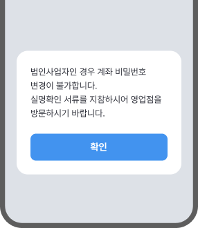
제목 없이 제한 조건과 방문 안내를 길게 써서
무엇에
대한 안내인지 바로 알기 어렵습니다.
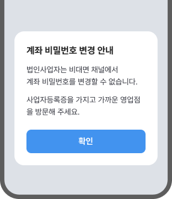
안내 주제를 제목에 쓰고
본문에는 고객이
알아야 할 사실과 필요한 행동을 나눠 씁니다.
작성 규칙
-
본문이 길어 한눈에 들어오지 않으면
제목에 안내 주제를 명사형으로
씁니다.
안내 내용이 3문장 이상이거나, 짧아도 주제가 바로 보이지 않을 때 제목을 함께 씁니다.
예) [계좌비밀번호 변경 안내], [오픈뱅킹 이용 안내]
-
본문은 상황을 먼저 설명하고, 필요한
행동은 뒤에 씁니다.
예) [서비스 점검 중이에요. 오전 3시 이후 다시 이용해 주세요.]
-
고객에게 행동을 요청할 때는 '-해
주세요'를 씁니다.
예) [가까운 영업점을 방문해 주세요]
오류 팝업 (Error Popup)
오류나 진행 제한 상황을 안내하는 팝업입니다. 오류 대상과 해결 행동을 함께 써서 고객이 다시 시도할 수 있도록 안내합니다.
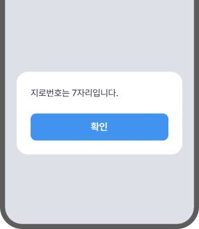
오류 내용만 전달하면
고객이 무엇을 고쳐야
하는지 직접 해석해야 합니다.
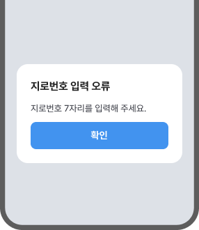
오류가 발생한 항목을 제목에 쓰고
본문에는
수정 방법을 해요체로 씁니다.
작성 규칙
-
본문만으로 상황을 설명하기 어려울 때는
제목과 내용으로 나눠 씁니다.
상태를 설명하는 오류 내용은 해요체로 씁니다.
예) [계좌 잔액이 부족해요], [등록된 인증서가 없어요]
자릿수나 형식처럼 입력값이 문제인 오류는 명사형으로 씁니다.
예) [지로번호 입력 오류], [인증서 확인 오류]
-
본문에는 오류 원인과 해결 방법을 함께
씁니다.
예) [오늘 이체 한도를 모두 사용했어요. 한도를 늘린 후 다시 시도해 주세요.]
원인은 고객 탓으로 읽히지 않게 씁니다.
예) [잘못 입력하셨습니다] → [비밀번호가 맞지 않아요. 다시 입력해 주세요.]
-
사실을 알리는 문장은 해요체로, 행동을
요청하는 문장은 '-해 주세요'로
씁니다.
예) [다른 출금계좌를 선택해 주세요]
법령 근거를 안내하는 고지만 '-합니다'체로 씁니다.
예) [만 14세 미만 고객은 비대면 계좌개설을 이용할 수 없습니다]
시스템이 처리한 결과는 피동형으로 씁니다.
예) [일시적인 오류로 처리되지 않았어요]
-
오류코드는 고객센터 문의에 필요할 때만
보여주고, 사용 방법을 함께
씁니다.
예) 오류코드: 2342342 / 고객센터 문의 시 오류코드를 알려주세요.
확인 팝업 (Confirm Popup)
실행 전 고객의 의사를 확인하는 팝업입니다. 현재 상황을 빠르게 파악 후 결정할 수 있도록 두괄식으로 씁니다.
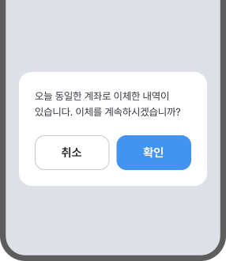
무엇을 다시 확인해야 하는지 구체적이지 않고
[확인]만으로는
실행될 행동을 알기 어렵습니다.
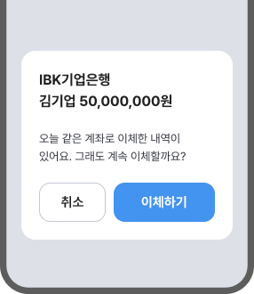
확인할 대상과 금액을 먼저 보여주고
질문과
버튼에는 고객이 결정할 행동을 함께 씁니다.
작성 규칙
-
제목에는 고객이 확인해야 할 대상이나
상황을 씁니다.
명사형과 서술형을 모두 쓸 수 있으며, 고객에게 행동을 요청하거나 제안할 때는 서술형으로 쓸 수 있습니다.
예) [오늘 같은 계좌로 이체한 내역이 있어요]
-
본문에는 결정에 필요한 조건이나 영향을
먼저 쓰고, 마지막에 고객의 의사를
묻습니다.
예) [지금 중단하면 입력한 정보가 저장되지 않아요. 이체를 중단할까요?]
-
상황을 알리는 문장은 해요체로, 고객의
의사를 묻는 문장은 '-할까요?'로
씁니다.
제목에서 이미 의사를 묻는 경우에는 본문 질문을 반복하지 않습니다.
예) [오늘 같은 계좌로 이체한 내역이 있어요. 그래도 계속 이체할까요?], [패턴을 재설정할까요?]
-
실행 버튼은 '확인' 대신 실제 행동을
씁니다.
예) [확인] → [이체하기], [확인] → [재설정하기]
안내/행동 바텀시트 (Info/Action Bottom Sheet)
제목을 필수로 사용하고, 고객에게 필요한 안내사항은 이해하기 쉽게, 행동 요청은 무엇을 해야하는지 명확하게 씁니다.
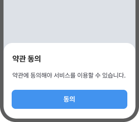
동의 대상이 제목과 버튼에 구체적으로 드러나지
않아서고
객이 무엇에 동의하는지 알기
어렵습니다.
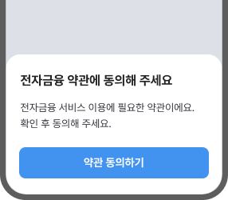
제목에는 동의 대상을 분명히 쓰고
버튼에는
고객이 실행할 행동을 구체적으로 씁니다.
작성 규칙
-
안내와 공지를 위한 제목은 기본적으로
명사형으로 씁니다.
안내와 공지 제목은 [대상 + 안내] 형태로 씁니다.
예) [투자성향분석 안내], [인증서 발급 안내]
행동을 요청하는 바텀시트에서는 고객이 해야 할 행동을 서술형으로 씁니다.
예) [전자금융 약관에 동의해 주세요], [고객정보를 등록해 주세요]
-
본문은 먼저 상황이나 이유를 쓰고,
전달할 내용이 둘 이상이면 불릿으로
나누어 씁니다.
예)
· 개인용 공동인증서로 로그인하려면 IBK기업은행 개인뱅킹에서 인증서를 발급받아 주세요.
· 이미 다른 기관에서 발급받은 인증서가 있다면, 등록 후 이용해 주세요. -
사실을 알리는 문장은 해요체로, 행동을
요청하는 문장은 '-해 주세요'로
씁니다.
단, 유의사항처럼 민감하거나 중요한 안내 또는 법령 근거는 하십시오체로 쓸 수 있습니다.
예) [비대면 실명인증으로 고객정보를 등록해 주세요], [확인 후 동의해 주세요]
-
실행 버튼은 [동작 + 하기] 형태로
씁니다.
예) [약관 동의하기], [고객정보 등록하기]
선택/입력 바텀시트 (Selection/Input Bottom Sheet)
고객 선택을 요청하는 경우 명확한 단어로 레이블을 쓰고, 필요하다면 보조 설명을 덧붙여 씁니다.
요청형 제목만으로는 어떤 값을 선택하는
화면인지
한눈에 들어오지 않습니다.
제목은 선택 대상을 명사형으로 써서
고객이
고를 값을 바로 알 수 있게 씁니다.
작성 규칙
-
제목은 [대상 + 선택] 또는 [대상 + 입력]
형태로 씁니다.
예) [기간을 선택해 주세요] → [대출기간 선택], [가입금액] → [가입금액 입력], [자동이체일] → [자동이체일 선택]
-
선택/입력 대상이 불분명한 제목은 쓰지
않습니다.
예) [기간] → [조회기간 선택], [금액] → [가입금액 입력]
-
옵션 항목은 같은 기준의 명사형으로 맞춰
씁니다.
예) [1개월], [3개월], [6개월]
-
보조 설명은 기준이나 조건이 필요할 때만
제목 아래에 해요체로 짧게
씁니다.
예) [1만원~50만원 사이로 입력해 주세요], [조회할 시작일을 선택해 주세요]
-
선택값을 적용하는 버튼은 실행할 행동이
드러나게 씁니다.
예) [분석하기], [적용하기]
데이터 없음 (Empty States)
보여줄 데이터나 콘텐츠가 없을 때 나타나는 화면입니다. 비어 있는 이유와 다음 행동을 해요체로 씁니다.
제목과 본문이 같은 내용을 반복해서
고객이
다음에 할 일을 알기 어렵습니다.
제목에는 없는 대상을 쓰고
본문에는
등록하면 얻는 점을 써서 다음 행동을 하도록
돕습니다
작성 규칙
-
제목에는 무엇이 없는지 구체적으로
씁니다.
예) [데이터가 없습니다] → [아직 거래 내역이 없어요], [내역이 없습니다] → [등록한 계좌가 없어요]
-
본문은 제목을 반복하지 않고, 이유와
다음 행동을 씁니다.
예) 제목:[등록한 계좌가 없어요], 본문: [새로 등록한 계좌가 없어요] → 본문: [계좌를 등록하면 이용할 수 있어요. 계좌를 등록해 주세요.]
-
고객이 할 수 있는 다음 행동이 있으면
함께 안내합니다.
예) [이체정보 등록], [계좌 추가/삭제]
-
추가 행동을 위한 버튼은 실행할 행동을
알 수 있도록 씁니다.
예) [등록] → [계좌 등록하기]
-
같은 행동을 본문과 버튼에 중복으로 쓰지
않습니다.
예) 본문: [계좌를 추가해 주세요], 버튼: [계좌 추가하기]처럼 반복하지 않고, 본문은 이유나 위치를 보완합니다.
-
아이콘과 본문은 간결하게 쓰고, 불필요한
감정 표현은 넣지 않습니다.
예) [아쉽지만 등록한 계좌가 없어요] → [등록한 계좌가 없어요]
작성 전 확인 포인트
고객이 처리 결과와 현재 상태를 알고, 필요한 다음 행동을 이어갈 수 있게 썼나요?
- 상태나 결과를 한 번에 하나씩 안내하고 간결하게 썼나요?
- 고객이 직접 실행한 결과는 실행한 대상과 결과가 드러나게 썼나요?
- 시스템이 처리한 결과는 현재 상태를 바로 알 수 있게 썼나요?
- 실패나 오류는 무엇을 못 했는지와 다시 할 행동을 함께 썼나요?
- 팝업과 바텀시트는 고객이 판단해야 할 상황과 이유가 먼저 보이게 썼나요?
- 데이터 없음은 단순히 '없음'만 말하지 않고, 비어 있는 이유나 다음 행동을 함께 썼나요?
메시지
메시지 카테고리는 화면에서 결과, 안내, 조건을 문장으로
전달하는 컴포넌트의 문구 작성 원칙을 안내합니다.
맥락에 맞는 어미로 현재 상황과 고객이 확인해야 할 내용을
분명하게 씁니다.
결과 메시지
- 고객이 실행한 행동의 완료, 실패, 거절 결과를 알려줍니다.
- 완료는 해요체로 간결하게, 오류/거절은 원인과 다음 행동을 정확히 씁니다.
안내 메시지
- 화면 목적, 서비스 특징, 진행 행동, 거래 조건을 알려줍니다.
- 상황에 맞는 어미로 고객이 이해하고 행동할 수 있게 씁니다.
작성 규칙
완료 메시지 (Completion Message)
고객이 실행한 행동이 완료되었음을 알려주는 메시지입니다. 실행한 대상과 결과를 바로 알 수 있도록 해요체로 간결하게 씁니다.
명사형 제목과 기계적인 처리 안내만으로는
고객이
실행한 행동의 결과가 바로 보이지 않습니다.
실행한 행동을 능동형으로 쓰고
필요한 경우
확인 방법을 함께 씁니다.
작성 규칙
-
제목은 고객이 실행한 대상과 처리 결과를
함께 씁니다.
예) [상환 완료]→ [대출금을 상환했어요], [발급 완료] → [증명서를 발급했어요]
-
제목은 고객 행동이 드러나는 능동형
해요체로 씁니다.
예) [신청이 완료되었습니다] → [대출을 신청했어요], [해지가 완료되었습니다] → [서비스를 해지했어요]
-
제목에는 마침표를 쓰지
않습니다.
예) [대출을 신청했어요.] → [대출을 신청했어요]
-
보조 문구는 완료 후 확인이 필요한
정보나 다음에 할 행동을 씁니다.
예) [[실행결과조회]에서 상환 내역을 확인할 수 있어요.]
-
[정상적], [성공적], [처리] 같은 기계적
표현을 쓰지 않습니다.
예) [성공적으로 처리되었습니다] → [자동이체를 등록했어요]
-
화면명이나 메뉴명은 대괄호로
표시합니다.
예) [결과조회에서 발행 결과를 꼭 확인해 주세요] → [[결과조회]에서 발행 결과를 꼭 확인해 주세요]
오류/거절 메시지 (Error/Rejection Message)
고객이 요청한 행동을 진행할 수 없거나 실패한 상황을 안내하는 메시지입니다. 실행하지 못한 대상과 이유를 분명히 쓰고, 필요한 다음 행동을 함께 안내합니다.
[불가]처럼 결과만 단정적으로 쓰면
시스템
통보처럼 느껴질 수 있습니다.
실행한 대상과 결과를 문장으로 안내하고
필요한
경우에는 이유를 함께 씁니다.
작성 규칙
-
제목에는 실행하지 못한 행동과 이유를
능동형으로 씁니다.
대출 거절처럼 근거 규정이 있고 민감한 고지는 ‘-합니다’로, 그 밖의 실패는 해요체로 씁니다.
예) [대출을 신청할 수 없습니다]
시스템이 처리하지 못한 결과는 피동형으로 쓸 수 있습니다.
예) [카드 발급이 신청되지 않았어요]
-
강한 부정 표현은 지양하고, 고객이 현재
할 수 있는 행동과 상태를 중심으로
안내합니다.
아쉽지만, 어렵다 등 고객 책임으로 느껴지는 표현보다 현재 가능한 상태를 중심으로 안내합니다.
예) [실패], [불가], [불가능], [부적합] → [신청할 수 없어요], [완료하지 못했어요]
-
본문에는 현재 상태와 발생 원인, 해결
방법을 순서대로 씁니다.
예) [네트워크 오류로 지금은 카드 발급을 신청할 수 없어요. 잠시 후 다시 시도해 주세요], [계좌번호를 확인한 뒤 다시 입력해 주세요]
-
문의가 필요한 경우에는 문의처와 다음에
할 행동을 함께 씁니다.
예) [문의: IBK고객센터(1588-2588)], [자세한 상담을 원하시면 IBK고객센터(1588-2588)로 문의해 주세요]
-
오류코드나 개발 용어는 고객이 알아야 할
필요가 있는 경우에만 씁니다.
예) [meta_ac_check 오류] → [이용할 수 없는 계좌번호예요]
-
사과 표현은 고객에게 큰 손해나 불편을
끼친 경우에만 씁니다.
단순 입력 오류나 고객이 바로 수정할 수 있는 상황에는 사과보다 수정 방법을 안내합니다.
예) 고객 데이터 손실, 은행 서비스 장애, 중복 출금 등
소개 메시지 (Promotional Message)
서비스, 메뉴, 상품의 특징과 장점을 알려 고객의 관심을 유도하는 메시지입니다. 실질적인 서비스 참여를 유도할 수 있도록 친근하고 간결하게 씁니다.
서비스명과 조건이 먼저 보여서
고객이 얻는
이점이 바로 보이지 않습니다.
고객이 얻는 이점을 먼저 쓰고
이용 조건은
보조 문구로 씁니다.
작성 규칙
-
제목은 핵심 장점을 1~2줄 이내
부사형이나 명사형으로 씁니다.
상품이나 서비스의 특징을 먼저 보여주고, 고객의 생활이나 이용 상황과 연결해 씁니다.
예) [쉽고 빠른 이체 “간편송금서비스”] → [이체를 더욱 간편하게 간편송금 서비스]
-
보조 문구는 제목을 보완하는 해요체
문장으로 씁니다.
예) [OTP, 공동인증서 없이 비밀번호만으로 이체할 수 있어요]
-
혜택이나 장점은 고객이 바로 이해할 수
있도록 구체적으로 씁니다.
예) [혜택이 많은 상품이에요] → [최대 5억원까지 이용할 수 있는 전세대출 상품이에요]
-
제목에는 물결표, 느낌표, 따옴표,
마침표를 쓰지 않습니다.
예) [계좌정보 내역을 한눈에!!!] → [계좌 거래를 한눈에]
행동 요청 메시지 (Action Message)
화면에서 고객이 할 다음 행동을 요청하는 메시지입니다. 실행할 행동과 대상을 함께 써서 무엇을 해야 하는지 바로 알 수 있도록 합니다.
제목이 화면 이름에 머물러서
고객이 지금
해야 할 행동을 바로 알기 어렵습니다.
고객이 해야 할 행동과 대상을 함께 써서
다음
행동을 바로 이어갈 수 있게 씁니다.
작성 규칙
-
제목에는 고객이 해야 할 행동을 대상과
함께 2줄 이내로 씁니다.
예) [이체] → [어디로 이체할까요?], [선택해 주세요] → [가입할 계좌를 선택해 주세요]
-
입력이나 선택을 요청할 때는 '-해
주세요'를, 선택 여부를 확인할 때는
'-할까요?'를 씁니다.
예) [가입할 계좌를 선택해 주세요], [어디로 이체할까요?]
-
행동 대상 없이 '선택', '입력',
'진행'처럼 동작만 단독으로 쓰지
않습니다.
예) [선택해 주세요] → [가입할 계좌를 선택해 주세요], [입력해 주세요] → [이체할 금액을 입력해 주세요]
-
보조 문구는 조건이나 기준이 필요한
경우에만 짧게 씁니다.
예) [본인 명의 계좌만 선택할 수 있어요], [관리자만 이용할 수 있어요]
-
제목에는 마침표를 쓰지
않습니다.
예) [가입할 계좌를 선택해 주세요.] → [가입할 계좌를 선택해 주세요]
유의사항 (Notice)
거래 전 고객이 꼭 알아야 할 제한, 조건, 예외를 안내하는 메시지입니다. 판단에 필요한 사실을 먼저 안내하고, 중요한 조건은 쉽게 확인할 수 있도록 씁니다.
법적 고지와 행동 요청이 긴 문장에 섞여 있어
거래
전 확인할 조건과 권리를 파악하기 어렵습니다.
확인할 행동, 고객의 권리, 유지 기준을 항목마다
써서
필요한 정보를 바로 확인할 수 있게
씁니다.
작성 규칙
-
제목은 [꼭 알아두세요]로
씁니다.
예) [유의사항] → [꼭 알아두세요]
-
상품 조건, 금리, 제한, 보호 범위 등의
법령 고지는 ‘-합니다’로 씁니다.
예) [이 상품은 예금자보호법에 따라 1억원까지 보호됩니다]
-
제한과 조건, 예외는 미사여구 없이
사실대로 분명하게 씁니다.
예) [혜택을 오래 누릴 수 있어요] → [카드 포인트와 할인 혜택은 카드 출시 후 3년 이상 유지됩니다]
-
안내 항목은 불릿으로 나누고,
제한사항이나 추가 설명은 필요할 때만
보조 항목으로 구분합니다.
예)
· 등록된 관심상품은 1개월 유지 후 자동으로 삭제됩니다.
· ‘신규처리 중 계좌’는 대부분의 퇴직연금 메뉴 거래가 제한됩니다.
※ 신규처리 중 계좌란? 퇴직연금제도 가입 미완료 계좌 또는 가입은 완료했으나 잔액이 없는 계좌 -
행동을 요청할 때만 '-해 주세요'를 쓰고,
단순 조건 안내는 요청형으로 쓰지
않습니다.
예) [적립계좌는 실제 활동 중인 입출금 계좌로 설정해 주세요], [등록된 관심상품은 1개월 유지 후 자동 삭제됩니다]
작성 전 확인 포인트
고객이 결과, 이유, 조건을 상황에 맞게 알고, 필요한 판단을 할 수 있게 썼나요?
- 완료 메시지는 고객이 실행한 대상과 결과를 해요체로 썼나요?
- 오류나 거절 메시지는 실행하지 못한 내용과 이유를 명확히 썼나요?
- 안내 문구는 화면 목적과 고객이 해야 할 행동이 드러나게 썼나요?
- 유의사항은 감탄이나 권유보다 조건, 제한, 예외를 사실 중심으로 썼나요?